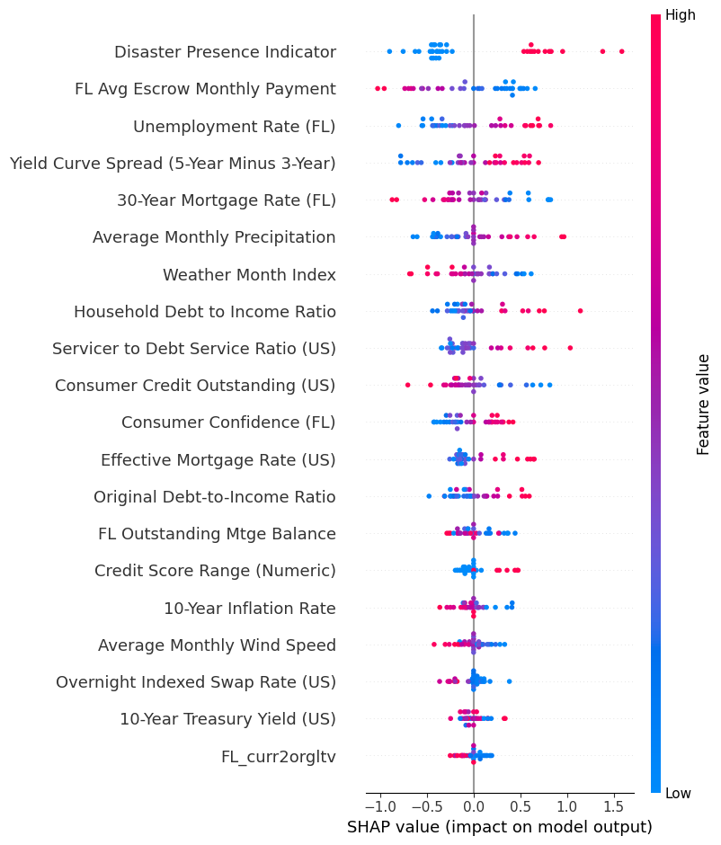
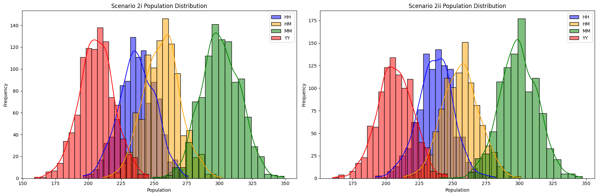
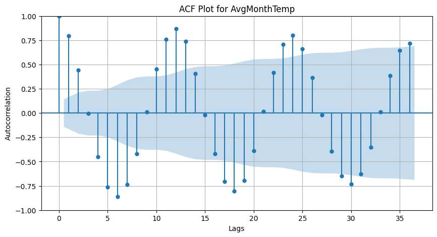

Integrating PNC Bank mortgage performance, macroeconomic indicators, and Florida weather & disaster records to quantify how extreme weather shapes default risk — and to bring that signal into underwriting.
Monthly 60+ day delinquency on Florida mortgages. Shaded bands mark months with a recorded natural disaster. The defining shock is macroeconomic — the 2008–09 financial crisis — peaking at 10.5% in December 2009.
Delinquency, temperature, and precipitation, each rescaled to 0–1 so their shapes can be compared on one axis. Seasonality is strong in weather, muted in credit — a first hint that the climate effect is conditional, not direct.
When every feature is allowed to interact inside the trained model, the Disaster Presence Indicator ranks first by SHAP value — above escrow burden, unemployment, the yield-curve spread, and mortgage rates.
This is the study's pivotal result: a variable with a weak raw correlation becomes the most influential predictor once macro and loan context is held constant. Climate risk is real but conditional — invisible to simple averages, decisive in a properly specified model.

Rather than trust one model, the study triangulates with survival analysis, interpretable additive models, and Bayesian simulation.
An additive survival model for time-to-default, letting weather and macro covariates shift the hazard of a loan becoming delinquent.
Logistic GAMs capture non-linear, interpretable effects of each driver on delinquency probability — partial effects you can actually read.
MCMC simulation propagates uncertainty through stress scenarios, producing portfolio outcome distributions rather than single point estimates.


Disaster exposure matters most in combination with macro stress — flag the interaction, not the weather alone.
The Florida-only design isolates a coherent hazard regime; the same pipeline can be re-fit per climate region.
Bayesian scenarios expose tail risk that point estimates hide — essential for capital and reserve planning.
The framework extends from portfolio aggregates to loan-level climate-aware risk scores.